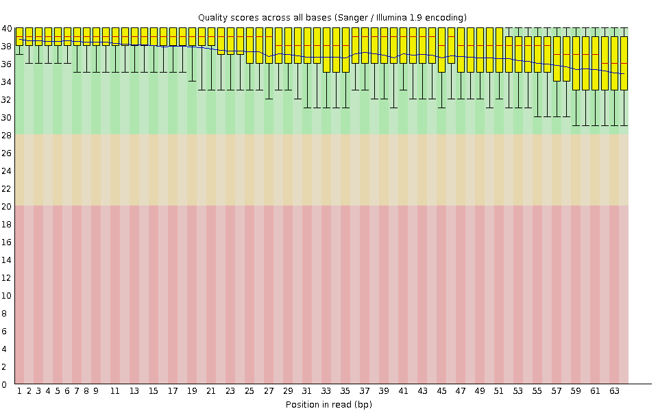
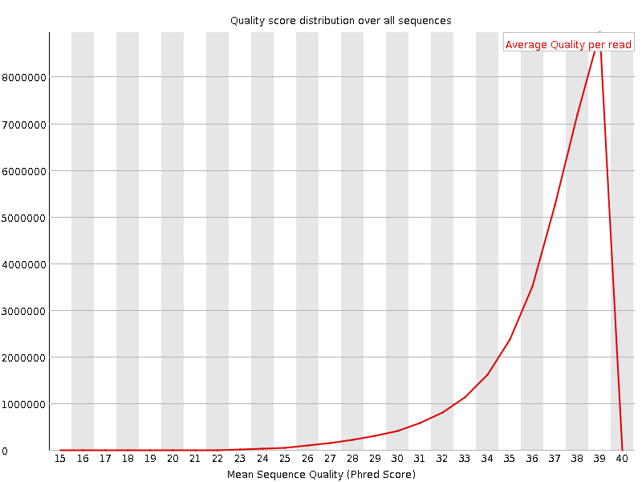
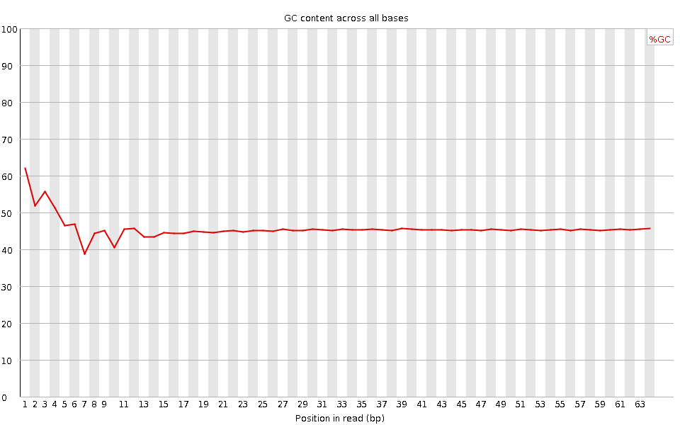
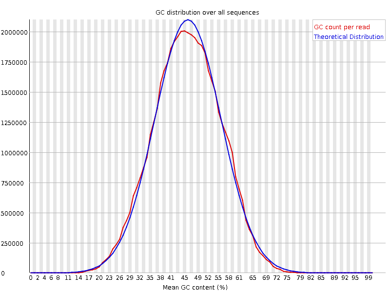
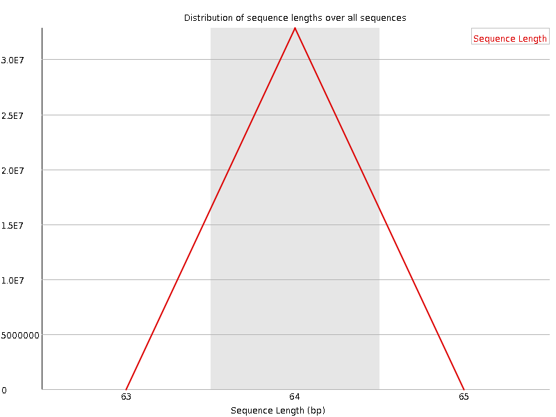
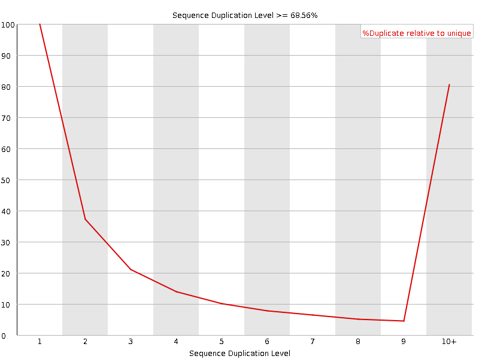
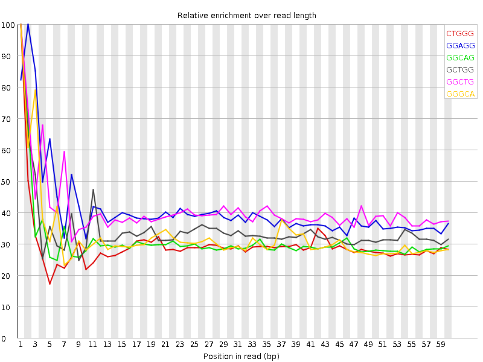

![[OK]](Icons/tick.png) Basic Statistics
Basic Statistics
| Measure | Value |
|---|---|
| Filename | SRR307933_pe_1.f.fastq |
| File type | Conventional base calls |
| Encoding | Sanger / Illumina 1.9 |
| Total Sequences | 32830959 |
| Filtered Sequences | 0 |
| Sequence length | 64 |
| %GC | 45 |
Per base sequence quality

Per sequence quality scores

![[WARN]](Icons/warning.png) Per base sequence content
Per base sequence content

![[FAIL]](Icons/error.png) Per base GC content
Per base GC content

Per sequence GC content

Per base N content

Sequence Length Distribution

Sequence Duplication Levels

Overrepresented sequences
No overrepresented sequences
Kmer Content

| Sequence | Count | Obs/Exp Overall | Obs/Exp Max | Max Obs/Exp Position |
|---|---|---|---|---|
| CTGGG | 3556740 | 2.3249593 | 7.827259 | 1 |
| GGAGG | 3287490 | 2.2063434 | 5.393494 | 2 |
| GGCAG | 3211940 | 2.1965241 | 7.0736647 | 1 |
| GCTGG | 3356215 | 2.1938806 | 6.362565 | 1 |
| GGCTG | 3153435 | 2.0613282 | 5.0500474 | 1 |
| GGGCA | 2807660 | 1.9200523 | 5.913082 | 1 |
| TGGGG | 2923875 | 1.8756949 | 5.9084992 | 2 |
| GGGAG | 2753150 | 1.8477302 | 6.370798 | 1 |
| GGGGG | 2337915 | 1.7977513 | 8.426746 | 1 |
| GGGGA | 2615640 | 1.7554426 | 7.9762826 | 1 |
| CTGGC | 2617645 | 1.7435478 | 5.192587 | 1 |
| GGGAA | 2838690 | 1.6627786 | 5.2756667 | 1 |
| GGGTG | 2481700 | 1.592035 | 5.270132 | 2 |
| GGGGC | 1985975 | 1.5560895 | 5.7355075 | 2 |
| GGGGT | 2392220 | 1.5346327 | 6.622307 | 1 |
| GTGGG | 2370535 | 1.5207217 | 7.4929647 | 1 |
| GTGTG | 2589640 | 1.3859426 | 8.677902 | 1 |
| TGTGT | 3055530 | 1.3642528 | 6.950187 | 2 |
| TACAA | 2550925 | 1.108624 | 6.1948304 | 6 |
| CGGGG | 1292335 | 1.0125953 | 8.779087 | 1 |
| GTACA | 2013200 | 1.0024569 | 7.037714 | 5 |
| TGTAC | 1872225 | 0.8911104 | 6.5895696 | 4 |
| GTGTA | 1752315 | 0.8185134 | 6.7646937 | 3 |